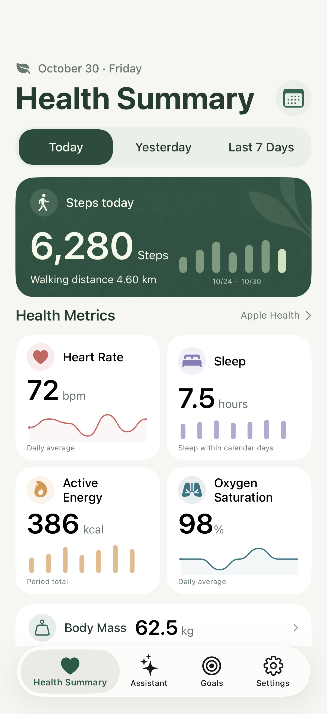
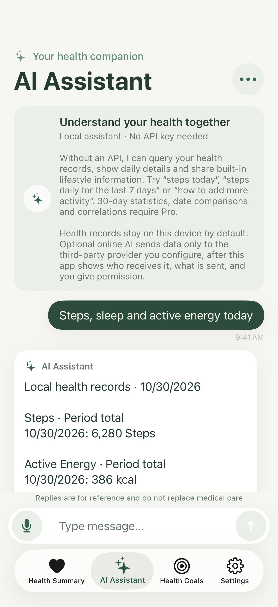
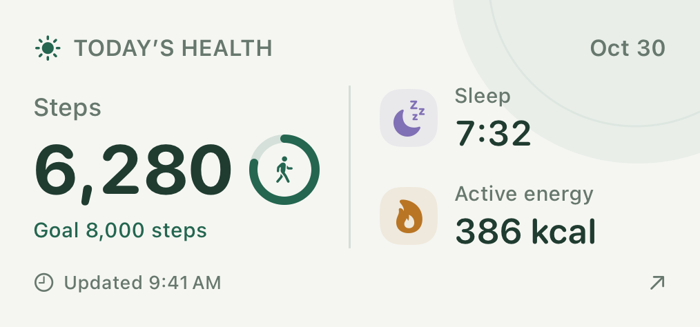
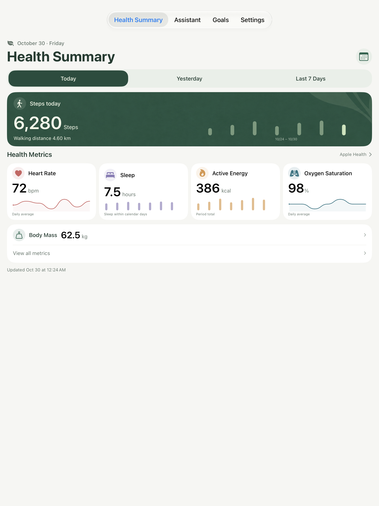
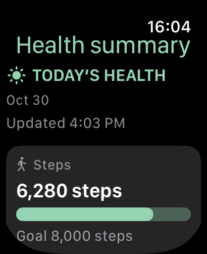
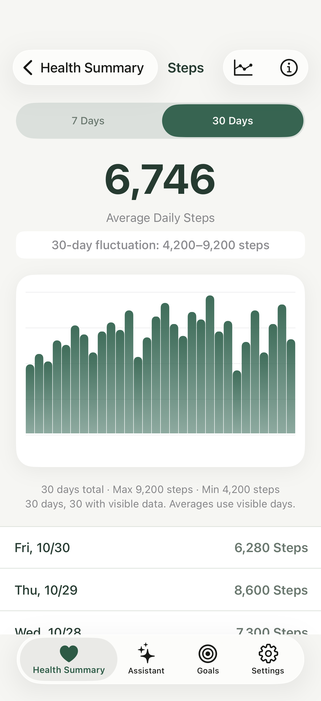
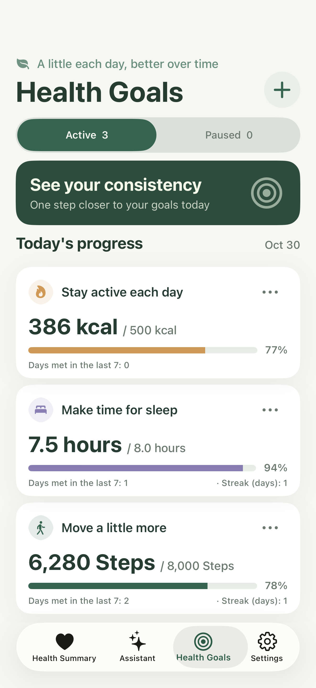

See today together
Steps, sleep, heart rate and other allowed records share one page. Missing data stays blank instead of becoming zero. Some metrics need Apple Watch or another source.
Live on the App Store · version 1.2.0
Start from the Apple Health records you allow. See a summary and trends, keep a small goal, and ask about your numbers in ordinary language. Local features need no account and no API key.
1.2.0 is available with native iPad, paired Apple Watch and more widgets

Summaries, local questions and goals stay on the phone
Existing records only; readings are never invented
No renewal; free basics remain free
The first screen explains Health access. Tap Continue, then choose types in the system sheet. VitaGauge reads records and does not write samples to Apple Health.
Steps, sleep, heart rate and other allowed records share one page. Missing data stays blank instead of becoming zero. Some metrics need Apple Watch or another source.

Try “steps today” or “steps daily for the last 7 days”, then “what about yesterday”. It uses rules and math, not a general-purpose model, and it does not diagnose.

One goal is free. On iOS 17, widgets show the last sync; they are not live monitors. Pro unlocks 30-day stats, date comparisons, correlations and online AI.
steps, walking and running distance, active energy, heart rate, resting heart rate, blood oxygen, sleep, weight, workouts, heart rate variability, respiratory rate, cardio fitness, body fat percentage, systolic and diastolic blood pressure, and body temperature. 7-day trends are free; 30-day windows need Pro.
Local sends no model request. API shows the provider text or an error. Local + API keeps simple queries on-device.
Voice input works only where the device can recognize speech on-device.
People who already record activity on iPhone or Apple Watch and want those records as summaries and trends. Not for children under 13. Not a clinician.
It organizes records you already authorized, shows a daily summary, trends and goal progress, and answers explicit record questions with rules and math.
It does not take new measurements, write to Apple Health, diagnose illness, prescribe, watch emergencies, or ship on Android.
Version 1.2.0 is available on the App Store. The main app supports iPhone on iOS 15+ and native iPad layouts; reading Apple Health on iPad requires iPadOS 17+ and authorization on that device. The update improves landscape, narrow windows and larger text, and adds Home Screen widget sizes and an inline Lock Screen style. The paired Apple Watch app, complications and Smart Stack widgets require watchOS 10+ and a compatible iPhone. Widgets require iOS / iPadOS 17+. The watch shows five metrics last synced from the phone; it does not independently read HealthKit, call AI or monitor health in real time.
Download and purchase availability depend on your Apple Account country or region and the local App Store.
Version 1.2.0 production views with synthetic data. Watch shows the paired iPhone’s latest synced summary.


Screenshots are the production UI with synthetic sample data.


VitaGauge organizes health records for everyday self-management. It is not a medical device and does not provide diagnoses, prescriptions or emergency monitoring. Correlation does not establish causation. Consult a qualified health professional before making medical decisions.